Sống khỏe
kiểu Nhật
12 thói quen nhỏ của người Nhật, nhà mình làm được ngay từ bữa tối nay
Chẳng có bí quyết nào cả
Chào cả nhà, mình là Daruma, búp bê may mắn của người Nhật.
Người ta hay hỏi người Nhật giữ sức khỏe bằng cách nào. Thật ra chẳng có bài thuốc gì cả, chỉ là những việc nhỏ làm đều mỗi ngày, từ bát cơm, bát canh đến giấc ngủ.
Cuốn này gom 12 thói quen như thế. Mỗi tập kể người Nhật làm gì, vì sao cơ thể cần vậy, rồi nhà mình làm thử trong bếp Việt ra sao. Mỗi tuần ra thêm tập mới.
Đọc xong thì làm gì?
Chọn một việc dễ nhất, làm thử 7 ngày. Lần đầu như thế là đủ.
12 thói quen
Bấm vào tập muốn đọc. Đang đọc ở đâu cũng mở lại được bằng nút Mục lục dưới sách.
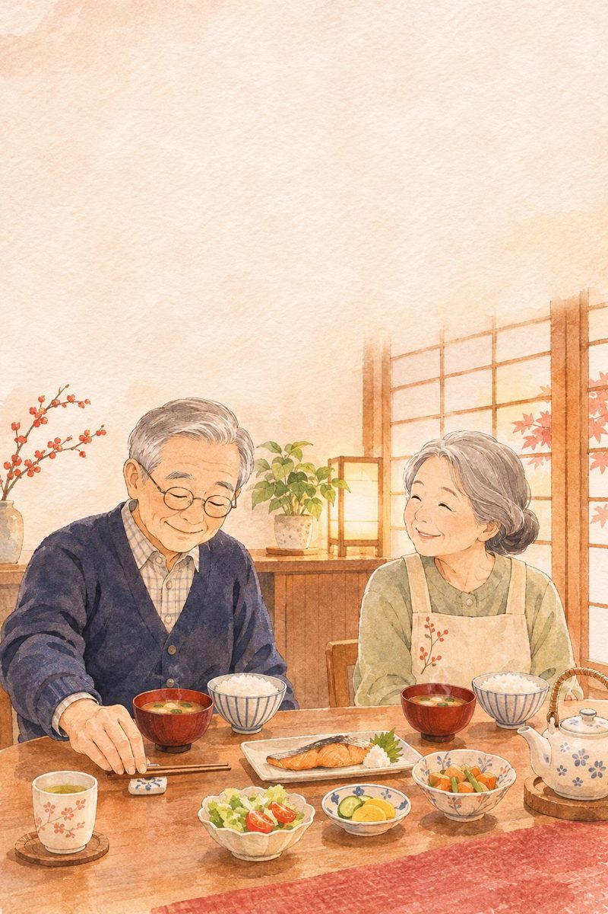
Ăn no
tám phần
hara hachi bunme
Người Nhật có câu: no tám phần thì khỏi phải đi gặp thầy thuốc.
Đang ngon miệng thì dừng đũa
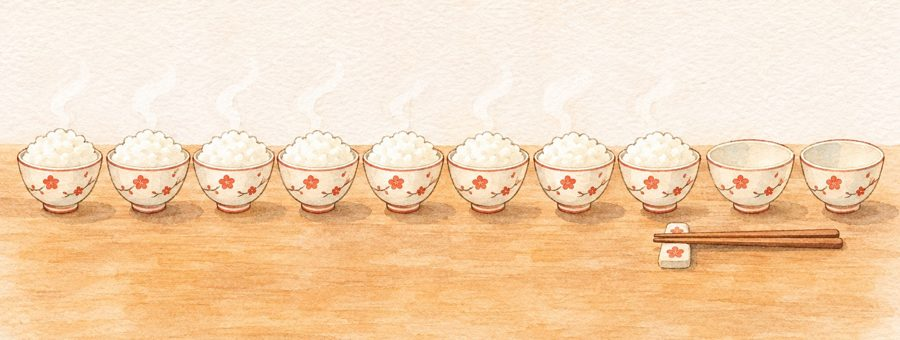
Hara hachi bunme nghĩa là ăn no tám phần. Ông bà Nhật dạy con cháu câu này từ nhỏ, giống ông bà mình hay dặn: ăn từ từ thôi con.
No tám phần là lúc bụng đã thấy dễ chịu, vẫn ăn được thêm vài miếng nữa. Người Nhật dừng đũa đúng lúc đó.
Bữa cơm Nhật thường có một bát cơm nhỏ, một bát canh và vài đĩa thức ăn nhỏ. Mỗi thứ một ít nên ăn chậm hơn, ít khi ăn quá.
Chuyện vui: bữa tối nhà ông bà Sato
 Ngon quá! Xới thêm bát nữa bà ơi!
Ông ơi, no tám phần thôi!
Ừ, thế thì ăn chậm lại.
Bụng vừa đủ, người nhẹ hẳn!
Ngon quá! Xới thêm bát nữa bà ơi!
Ông ơi, no tám phần thôi!
Ừ, thế thì ăn chậm lại.
Bụng vừa đủ, người nhẹ hẳn!
Vì sao ăn nhanh dễ ăn quá no?

Khi mình ăn, bụng phải mất một lúc mới báo được lên não là đã đủ. Phải khoảng 20 phút sau khi bắt đầu ăn, não mới nhận được tin này.
Ăn nhanh thì chưa đến 20 phút đã hết hai, ba bát. Lúc não báo no thì mình đã ăn quá phần mất rồi.
Ăn chậm thì não kịp báo no đúng lúc, tự khắc mình ăn vừa đủ.
Ăn vội và ăn thong thả khác nhau thế nào?
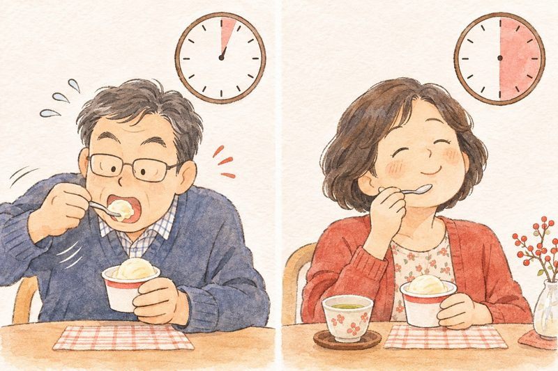
Thử nghiệm ăn kem
17 người tình nguyện ăn cùng một cốc kem, hai lần vào hai ngày khác nhau: một lần ăn hết trong 5 phút, một lần ăn từ từ trong 30 phút. Lần ăn từ từ, họ thấy no hơn dù ăn đúng bằng ấy kem.
Nguồn: Kokkinos A. và cộng sự, tạp chí Journal of Clinical Endocrinology & Metabolism, 2010.
Khảo sát hơn 3.200 người Nhật
Người vừa ăn nhanh vừa ăn đến căng bụng dễ bị thừa cân gấp khoảng 3 lần người không có hai thói quen này. Nam hay nữ, từ 30 đến 69 tuổi, kết quả đều như nhau.
Nguồn: Maruyama K. và cộng sự, tạp chí y khoa BMJ (Anh), 2008.

Ăn ít đi có bị yếu sức không?
Không. Ăn no tám phần là bớt phần ăn thêm cho đã miệng. Những món nuôi cơ thể thì vẫn ăn đủ.
Nên bớt
- Bát cơm thứ hai, thứ ba
- Bánh kẹo, nước ngọt
- Đồ chiên rán
Vẫn ăn đủ
- Cá, trứng, đậu phụ, thịt nạc
- Rau xanh
- Nước uống
Ông bà đang ăn kém, gầy sút thì không cần bớt. Cứ ăn đủ bữa và hỏi bác sĩ.
Bắt đầu từ bữa tối nay
Thử 7 ngày
Bữa tối nào ăn chậm được thì bấm đóng dấu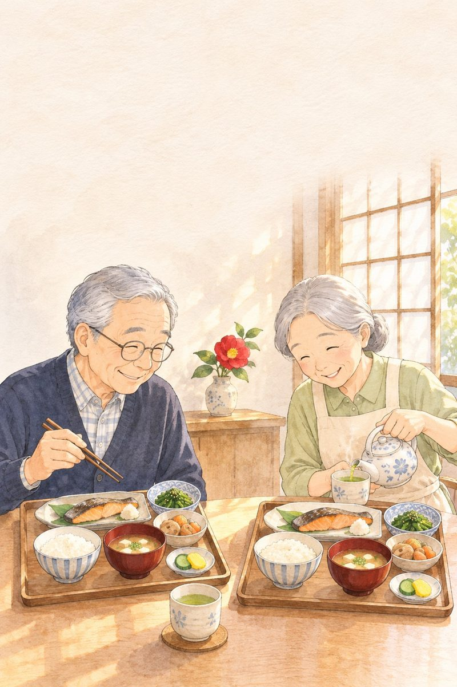
Một canh
ba món
ichiju sansai
Một bát cơm, một bát canh, ba món nhỏ: cách người Nhật ăn đủ chất mà không phải ăn nhiều.
Năm thứ trên một chiếc khay
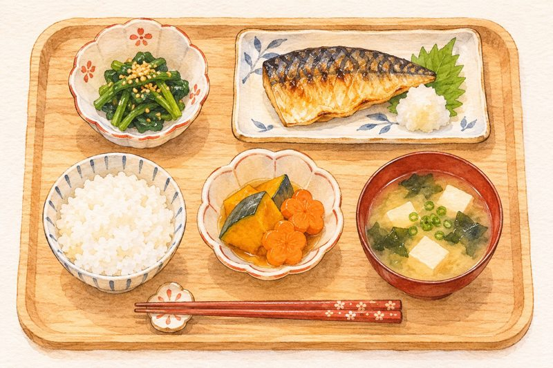
Ichiju sansai nghĩa là một canh, ba món. Cùng bát cơm, mâm Nhật có năm thứ: cơm, canh, một món đạm như cá, thịt, trứng, đậu phụ, và hai món rau, nấm hoặc rong biển.
Món nào cũng chỉ một ít, đựng trong bát đĩa nhỏ. Nhìn thì nhiều món, ăn hết vẫn không nặng bụng.
Chuyện vui: ông Sato và bát cơm to
 Bát to thế này là đủ rồi!
Ông ăn thử mâm này xem!
Mỗi thứ một ít mà ngon thế!
Ông bày mâm cho tôi à?
Bát to thế này là đủ rồi!
Ông ăn thử mâm này xem!
Mỗi thứ một ít mà ngon thế!
Ông bày mâm cho tôi à?
Vì sao nhiều món nhỏ tốt hơn một món to?

Mỗi loại thức ăn mang một loại chất. Cơm cho sức. Cá, thịt, trứng, đậu giữ cơ bắp. Rau, nấm, rong biển có chất xơ và vitamin.
Một đĩa cơm thịt đầy thì no nhưng thiếu rau. Năm món nhỏ thì loại nào cũng có một ít.
Nhiều món còn làm mình gắp chậm lại, ăn xen canh và rau, nên ăn vừa đủ mà không cần nhiều cơm.
Ăn đủ món, người Nhật có khỏe hơn không?
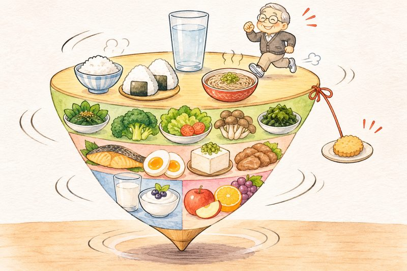
Hướng dẫn ăn uống hình con quay
Nhật vẽ hướng dẫn ăn uống thành hình con quay. Đủ các tầng cơm, rau, món đạm, sữa, trái cây thì con quay mới đứng vững.
79.000 người Nhật · theo dõi 15 năm
Các nhà khoa học hỏi kỹ bữa ăn của người Nhật từ 45 đến 75 tuổi, rồi theo dõi họ suốt 15 năm.
Nhóm ăn sát hướng dẫn con quay nhất có số người qua đời thấp hơn khoảng 15% so với nhóm ăn lệch nhất. Giảm rõ nhất là số người mất vì đột quỵ.
Nguồn: Kurotani K. và cộng sự, tạp chí y khoa BMJ (Anh), 2016.
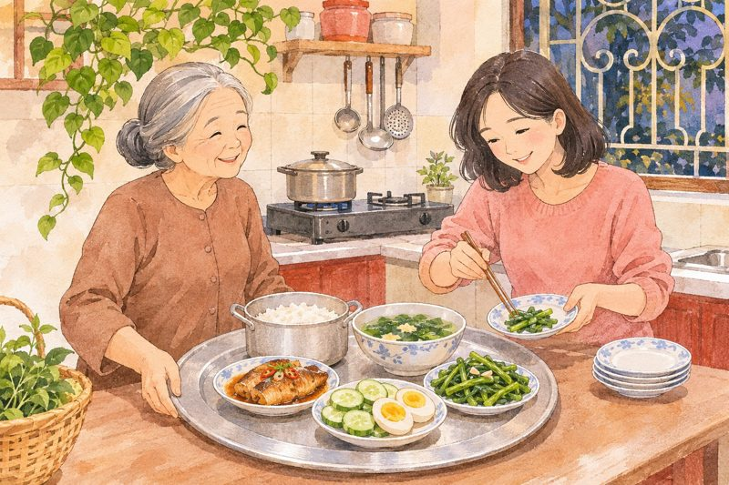
Một canh ba món có tốn công nấu không?
Không. Mâm cơm Việt vốn đã gần như vậy: cơm, canh, món mặn, đĩa rau. Chỉ cần thêm một món nhỏ dễ làm.
Món nhỏ 5 phút
- Dưa chuột thái
- Trứng luộc
- Đậu phụ chấm
- Rau luộc
Canh nấu nhanh
- Canh rau ngót
- Canh bí xanh
- Canh cà chua trứng
Đếm món trên mâm tối nay
Thử 7 ngày
Bữa nào đủ năm thứ thì bấm đóng dấuMột bát cơm, một bát canh,
ba món nhỏ.
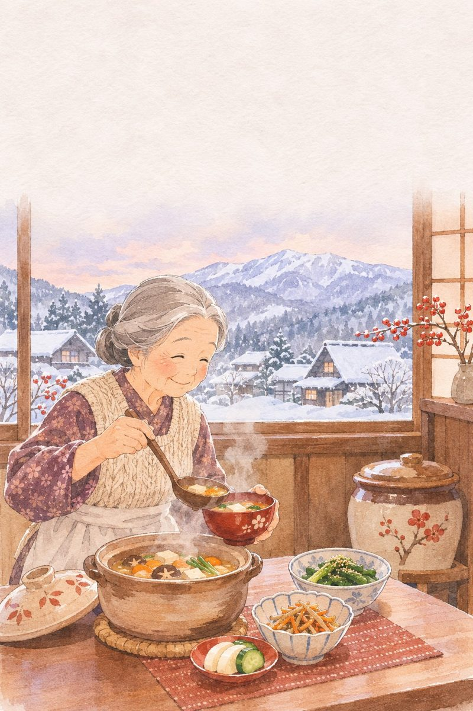
Bớt muối như
người Nagano
genen
Một vùng từng có nhiều người mất vì đột quỵ nhất nước Nhật. Mấy chục năm sau, cả tỉnh đứng đầu về tuổi thọ.
Mang bát canh đi đo độ mặn
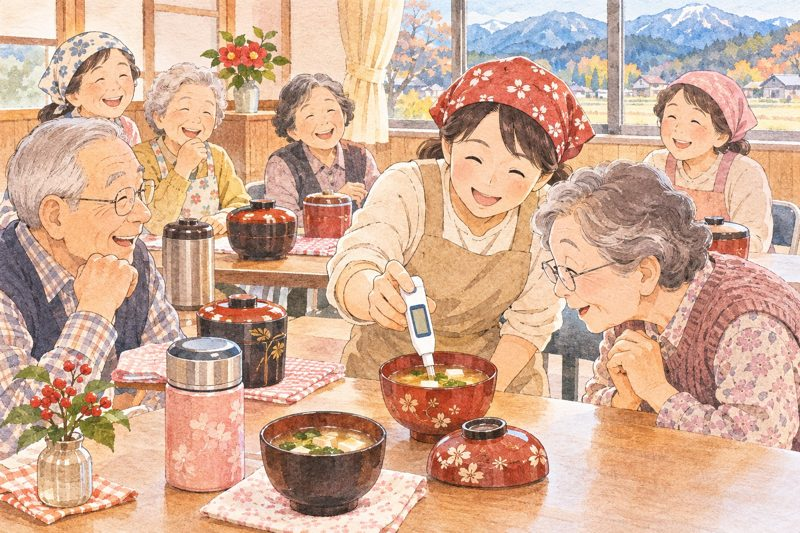
Nagano là tỉnh miền núi, mùa đông rất lạnh. Ngày trước nhà nào cũng muối dưa, nấu canh miso thật đậm cho đưa cơm.
Những năm 1960, vùng Saku của Nagano có nhiều người mất vì đột quỵ nhất nước Nhật. Từ khoảng năm 1980, tỉnh vận động cả nhà bớt muối và mở lớp dạy nấu nhạt.
Năm 2010, Nagano đứng đầu nước Nhật về tuổi thọ trung bình, cả nam lẫn nữ.
Chuyện vui: nồi canh của ông Sato
 Thêm thìa miso nữa cho đậm!
Ối, máy báo mặn quá rồi!
Thì thêm rau với đậu phụ vậy.
Nhạt mà vẫn ngon ông nhỉ!
Thêm thìa miso nữa cho đậm!
Ối, máy báo mặn quá rồi!
Thì thêm rau với đậu phụ vậy.
Nhạt mà vẫn ngon ông nhỉ!
Ăn mặn thì huyết áp lên, vì sao?
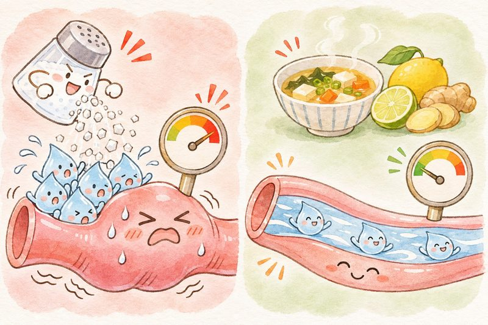
Muối vào người thì kéo theo nước. Ăn mặn, mình hay khát, cơ thể cũng giữ nước lại để pha loãng chỗ muối đó.
Nước giữ lại làm máu trong mạch nhiều lên. Mạch máu bị căng, đó là huyết áp cao.
Mạch căng lâu ngày thì mỏi và dễ hỏng. Mạch máu trong não hỏng là đột quỵ.
Ăn nhạt đi, huyết áp có xuống thật không?
Thử nghiệm 412 người ở Mỹ
Người tham gia được nấu sẵn cơm hằng ngày, lần lượt ăn ba mức muối: mặn, vừa, nhạt, mỗi mức 30 ngày. Ăn càng nhạt, huyết áp càng xuống. Người huyết áp cao hay người bình thường đều thấy như vậy.
Nguồn: Sacks F.M. và cộng sự, tạp chí y khoa New England Journal of Medicine (Mỹ), 2001.
Một ngày nên ăn bao nhiêu muối?
- Dưới 5 gTổ chức Y tế Thế giới khuyên, khoảng 1 thìa cà phê
- Dưới 7,5 gNhật khuyên nam giới; nữ giới dưới 6,5 g
- Khoảng 9,4 gNgười Việt đang ăn mỗi ngày (điều tra năm 2015)
Nguồn: WHO; Bộ Y tế, Lao động và Phúc lợi Nhật Bản (2025); Bộ Y tế Việt Nam (2015).

Không thấy mặn là đã ăn nhạt?
Chưa chắc. Ở nhà mình, phần lớn muối nằm trong nước mắm, bột canh, hạt nêm và bát nước chấm, không chỉ trong lọ muối. Ăn quen thì lưỡi không còn thấy mặn.
Tin vui là lưỡi đổi được. Ăn nhạt đi vài tuần, món nhạt lại thấy ngon.
Ai đang uống thuốc huyết áp thì vẫn uống theo bác sĩ. Bớt muối là việc làm thêm, không thay thuốc.
Bớt muối từ bát nước chấm
Thử 7 ngày
Bữa nào nêm nhạt hơn thì bấm đóng dấu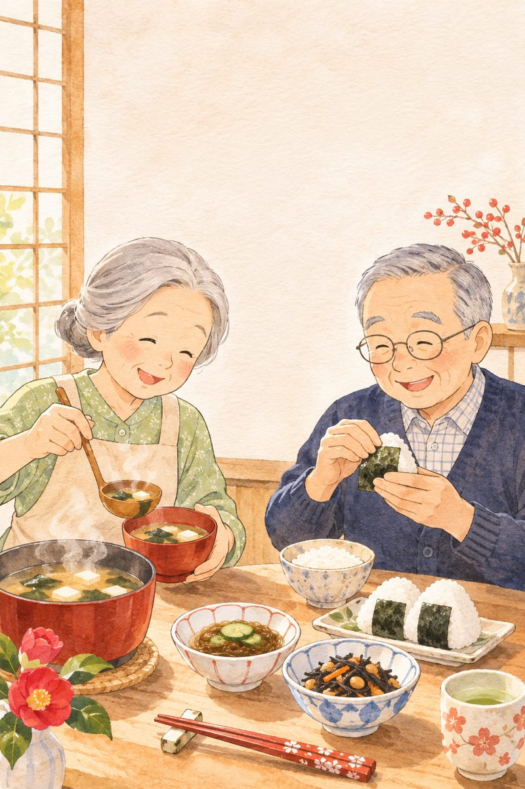
Bát canh có
rong biển
kaisō
Người Nhật ăn rong biển gần như ngày nào cũng có, mà không cần nấu món rong riêng.
Mỗi món một nhúm rong
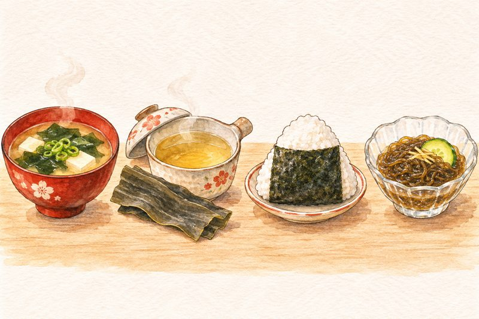
Người Nhật thả rong wakame vào canh miso, ninh tảo bẹ kombu lấy nước dùng, cuộn lá nori quanh nắm cơm.
Ở Okinawa, người ta trộn rong mozuku với giấm, ăn như mình ăn dưa góp. Rong mảnh như sợi tóc, nhớt nhớt, chua mát.
Rong không phải món chính, chỉ một nhúm nhỏ trong món này món kia, nhưng gần như ngày nào cũng có.
Chuyện vui: ông Sato sợ rong nhớt
 Nhớt nhớt, tôi chịu thôi!
Ông thử rong trộn giấm xem!
Ơ, chua chua mát mát, ngon!
Bà cho tôi thêm đĩa nữa!
Nhớt nhớt, tôi chịu thôi!
Ông thử rong trộn giấm xem!
Ơ, chua chua mát mát, ngon!
Bà cho tôi thêm đĩa nữa!
Rong biển có gì mà người Nhật ăn mãi?
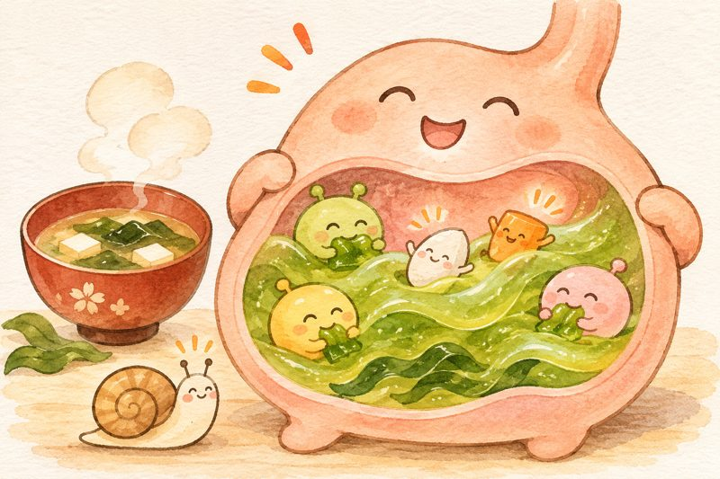
Rong biển ít năng lượng nhưng nhiều chất xơ, phần lớn là chất nhớt tan trong nước. Vào bụng, chất nhớt nở ra như thạch, giúp no lâu và làm thức ăn đi chậm lại.
Chất xơ này cũng là thức ăn cho các vi khuẩn có lợi trong ruột.
Rong còn có i-ốt. Tuyến giáp cần i-ốt để làm việc.
Người ăn rong nhiều có khác không?

86.000 người Nhật, 40–69 tuổi
Các nhà khoa học hỏi họ ăn rong biển nhiều hay ít, rồi theo dõi nhiều năm.
Người ăn rong gần như ngày nào cũng có ít bị bệnh thiếu máu cơ tim hơn người ít ăn rong nhất: nam thấp hơn khoảng một phần tư, nữ thấp hơn gần một nửa.
Nguồn: Murai U. và cộng sự, tạp chí American Journal of Clinical Nutrition (Mỹ), 2019.

Rong biển càng ăn nhiều càng tốt?
Không. Rong biển, nhất là tảo bẹ kombu, có rất nhiều i-ốt. Ăn vừa thì tốt, ăn quá nhiều lại hại tuyến giáp.
Người Nhật chỉ ăn mỗi bữa một nhúm nhỏ và đổi loại luôn: hôm nay wakame, mai nori, hôm sau hijiki.
Người có bệnh tuyến giáp hoặc đang ăn kiêng i-ốt thì hỏi bác sĩ trước khi ăn nhiều rong.
Thả một nhúm rong vào bát canh
Thử 7 ngày
Bữa nào có rong thì bấm đóng dấu
Cá xanh tuần
hai, ba bữa
aozakana
Con cá nục vài chục nghìn một cân ở chợ Việt, người Nhật gọi là cá lưng xanh và tuần nào cũng ăn.
Bữa sáng có miếng cá nướng

Người Nhật gọi cá thu, cá mòi, cá sòng là aozakana, nghĩa là "cá lưng xanh". Lưng chúng xanh sẫm, bụng trắng bạc.
Cách nấu rất đơn giản: xát chút muối rồi nướng, hoặc kho nhạt với gừng. Một miếng cá thu nướng đi cùng bát cơm, bát canh miso là bữa sáng quen thuộc của nhiều nhà.
Mùa thu, cả nước chờ cá thu đao béo nhất năm để nướng ăn.
Chuyện vui: ông Sato ngại xương cá
 Nhiều xương, tôi ngại lắm!
Cá thu đây, xương to dễ gỡ!
Ừ nhỉ, thơm quá!
Meo… hết sạch rồi à?
Nhiều xương, tôi ngại lắm!
Cá thu đây, xương to dễ gỡ!
Ừ nhỉ, thơm quá!
Meo… hết sạch rồi à?
Cái béo trong cá là cái béo tốt
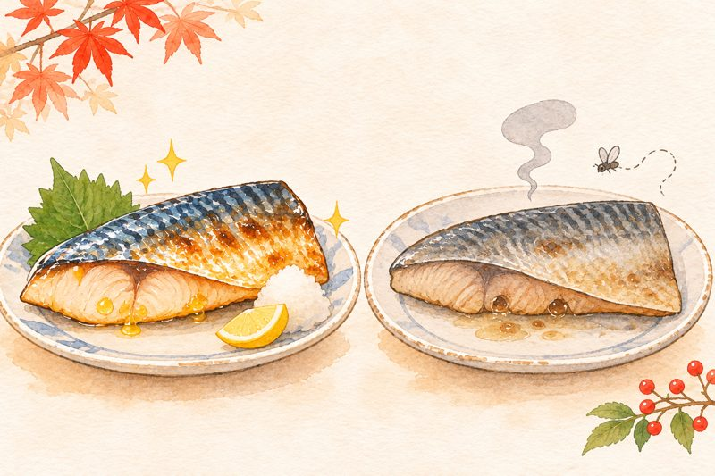
Thịt cá lưng xanh có nhiều mỡ cá, trong đó có hai chất béo tên là DHA và EPA. Cơ thể người hầu như không tự làm ra được hai chất này, phải ăn vào.
Rau và đậu chỉ có loại chất béo khác, cơ thể đổi sang được rất ít. Muốn có DHA, EPA thì nguồn chính là cá biển.
Dầu cá cũng rất dễ ôi. Người Nhật có câu "cá thu ôi ngay khi còn tươi", nên họ mua về là nấu ngay.
Ăn cá nhiều có khác không?

41.578 người Nhật, 40–59 tuổi
Các nhà khoa học hỏi mỗi người ăn cá bao nhiêu, rồi theo dõi khoảng 10 năm.
Nhóm ăn cá nhiều nhất, khoảng 8 bữa mỗi tuần, ít bị nhồi máu cơ tim hơn hẳn: chưa bằng một nửa so với nhóm chỉ ăn cá 1 bữa mỗi tuần.
Nguồn: Iso H. và cộng sự, tạp chí Circulation (Mỹ), 2006.
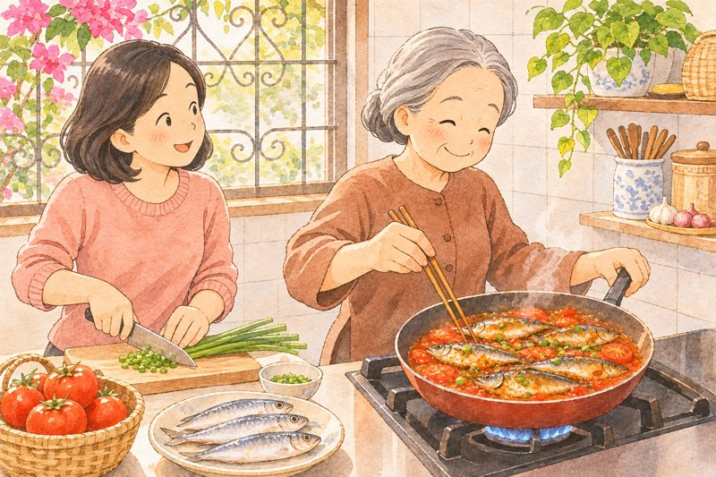
Cá nào cũng như nhau?
Không hẳn. DHA, EPA có nhiều nhất ở cá biển nhiều mỡ, thịt sẫm màu: cá thu, cá nục, cá trích, cá mòi, cá hồi.
Cá rô phi, cá trắm vẫn cho nhiều đạm, nhưng ít DHA, EPA hơn hẳn. Cá biển nhỏ ở chợ Việt như cá nục, cá bạc má lại rẻ mà nhiều mỡ tốt.
Cá rán ngập dầu thì bớt lại, nướng, hấp hay kho vẫn hơn.
Tuần này ăn cá biển hai bữa
Thử 7 ngày
Bữa nào có cá biển thì bấm đóng dấu
Natto cho
bữa sáng
nattō
Món đậu kéo sợi, khách nước ngoài nhăn mặt, còn người Nhật ăn từ bé tới già.
Khuấy cho ra sợi rồi mới ăn
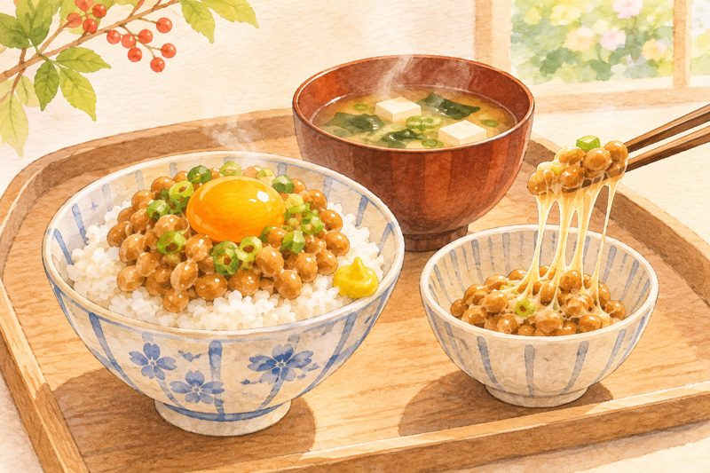
Natto là đậu tương lên men, bán thành hộp nhỏ, kèm gói nước tương và mù tạt.
Người Nhật mở hộp, rưới nước tương, khuấy bằng đũa tới khi đậu nổi bọt và kéo sợi trắng, rồi đặt lên bát cơm nóng. Nhiều nhà ăn như thế mỗi sáng.
Họ thích món này đến mức chọn ngày 10/7 làm Ngày Natto, vì trong tiếng Nhật số 7 đọc là "na", số 10 đọc là "tō".
Chuyện vui: ông Sato khuấy natto
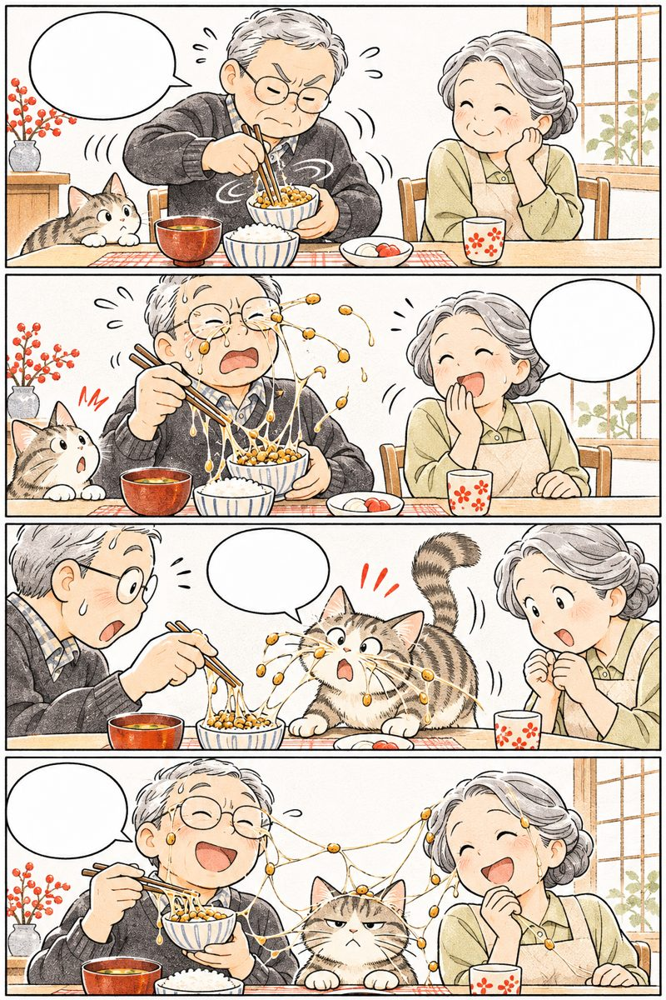
Phải khuấy đủ năm mươi lần! Ông ơi, bắn tứ tung! Meo! Dính râu rồi! Càng dài càng ngon!Sợi nhớt ấy từ đâu ra?

Đậu tương nấu chín được ủ ấm với một loại vi khuẩn có lợi tên là vi khuẩn natto. Vi khuẩn làm đậu mềm, dễ tiêu hơn, và tạo ra lớp sợi nhớt.
Trong natto có vitamin K2, loại vitamin giúp canxi bám vào xương.
Những năm 1980, nhà khoa học Nhật Sumi Hiroyuki tìm thấy trong natto một enzym làm cục máu đông nhân tạo trong phòng thí nghiệm tan dần. Ông đặt tên nó là nattokinase.
Thị trấn ăn natto nhiều

29.079 người ở Takayama, từ 35 tuổi
Các nhà khoa học ở thị trấn núi Takayama hỏi mỗi người ăn natto bao nhiêu, rồi theo dõi 16 năm.
Nhóm ăn natto nhiều nhất ít mất vì đột quỵ hơn nhóm ăn ít nhất khoảng một phần ba. Các món đậu khác thì không thấy khác biệt như vậy.
Nguồn: Nagata C. và cộng sự, tạp chí American Journal of Clinical Nutrition (Mỹ), 2017.

Natto tốt thế, ai ăn cũng được?
Không. Người đang uống thuốc chống đông warfarin được bác sĩ Nhật dặn không ăn natto.
Vitamin K trong natto làm thuốc này kém tác dụng, máu lại dễ đông như chưa uống thuốc.
Bố mẹ đang uống thuốc chống đông, thuốc huyết áp hay thuốc tim: hỏi bác sĩ trước khi thêm natto vào bữa ăn.
Ăn thử nửa hộp natto
Thử 7 ngày
Bữa nào ăn natto thì bấm đóng dấu
Nhanh 3 phút,
chậm 3 phút
interval sokuho
Ông bà ở Nagano không đếm bước. Họ đi lúc nhanh lúc chậm, mỗi đoạn 3 phút.
Cách đi bộ của thành phố Matsumoto

Ở thành phố Matsumoto, tỉnh Nagano, nhóm của giáo sư Nose Hiroshi, Đại học Shinshu, nghĩ ra cách đi bộ này cho người trung niên và cao tuổi.
Cách làm rất gọn: đi nhanh 3 phút, đi thong thả 3 phút, cứ thế lặp lại. Mỗi ngày chừng 30 phút, tuần ít nhất 4 ngày.
Hàng nghìn người ở Nagano đã tập theo, rồi cách đi này lan ra khắp nước Nhật.
Chuyện vui: ông Sato tập đi nhanh
 Ba phút nhanh nào ông!
Hơi hụt hơi đấy!
Giờ chậm ba phút!
Bà ơi, nhanh lên nào!
Ba phút nhanh nào ông!
Hơi hụt hơi đấy!
Giờ chậm ba phút!
Bà ơi, nhanh lên nào!
Vì sao phải có đoạn đi nhanh?
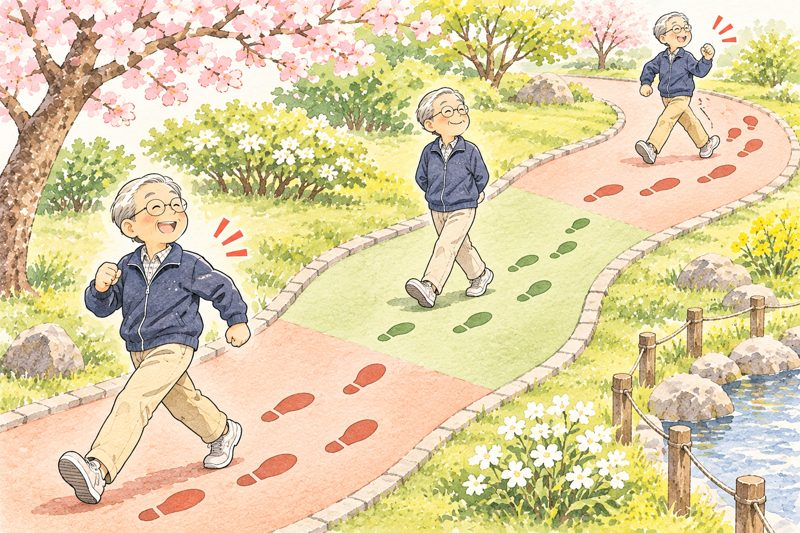
Đi thong thả thì cơ đùi và tim chưa phải gắng sức, nên đi nhiều mà sức vẫn thế.
Đoạn đi nhanh bắt cơ đùi và tim làm việc thêm một chút, giống như tập tạ nhẹ. Nhanh tới mức nào? Vẫn nói chuyện được nhưng hơi hụt hơi, không hát nổi.
Đoạn đi chậm cho cơ thể lấy lại hơi, nên người lớn tuổi vẫn theo được mà không kiệt sức.
Năm tháng đi bộ, khác ở đâu?

246 người Nhật, tuổi trung bình 63
Họ được chia 3 nhóm: không tập, đi bộ đều đều, và đi 3 phút nhanh, 3 phút chậm. Cả hai nhóm đi bộ tập 5 tháng.
Nhóm đi nhanh, chậm có sức cơ đùi tăng 13–17%, sức bền tăng khoảng 8–9%, huyết áp giảm nhiều hơn nhóm đi đều.
Nguồn: Nemoto K. và cộng sự, tạp chí Mayo Clinic Proceedings (Mỹ), 2007.

Cứ đủ một vạn bước là được?
Chưa chắc. Giáo sư Nose nói đi thong thả một vạn bước mỗi ngày mà chân vẫn không khỏe hơn.
Cái cần là có những đoạn đi nhanh. Đi ít bước hơn mà có đoạn nhanh, đoạn chậm vẫn hơn đi nhiều bước mà đều đều.
Người có bệnh tim, huyết áp chưa ổn hay đau khớp nặng: hỏi bác sĩ trước khi tập đi nhanh.
Ra ngõ đi thử ba lượt
Thử 7 ngày
Hôm nào đi đủ lượt thì bấm đóng dấu
Có việc để mong
mỗi sáng
ikigai
Về hưu rồi, người Nhật vẫn hỏi nhau: sáng mai dậy, mình mong làm gì?
Về hưu chưa phải là nghỉ

Ikigai ghép từ "iki" là sống và "gai" là đáng giá: điều làm mỗi ngày thấy đáng sống. Với người Nhật, đó thường là chuyện nhỏ: mảnh vườn, đứa cháu, hội thơ, một việc có người cần mình.
Từ năm 1975, Nhật có "Trung tâm nhân lực bạc": người từ 60 tuổi đăng ký nhận việc nhẹ như tỉa cây, trông bãi xe đạp, dạy chữ. Cả nước có khoảng 700 nghìn hội viên.
Chuyện vui: ông Sato trồng cà chua
 Về hưu rồi, chán quá…
Ông trồng cà chua đi!
Ra hoa rồi bà ơi!
Giờ ông dậy sớm hơn cả gà!
Về hưu rồi, chán quá…
Ông trồng cà chua đi!
Ra hoa rồi bà ơi!
Giờ ông dậy sớm hơn cả gà!
Có việc để mong thì khác gì?
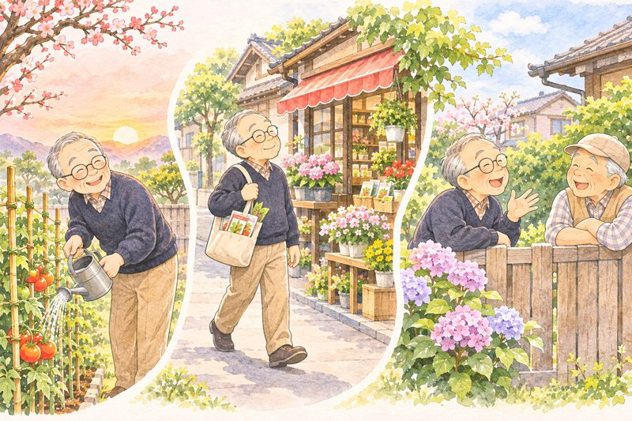
Có việc để mong thì sáng dậy có lý do bước ra khỏi giường. Rồi tự nhiên đi lại, ra ngoài, gặp người.
Về hưu đột ngột, nhiều người mất vai trò quen thuộc: không ai chờ, không ai hỏi. Ngồi nhà lâu, chân yếu đi, ít nói, dễ buồn.
Ikigai không cần to tát. Mỗi ngày có một việc mình thích, hoặc có người cần đến mình, là đủ.
Hỏi một câu, theo dõi 7 năm
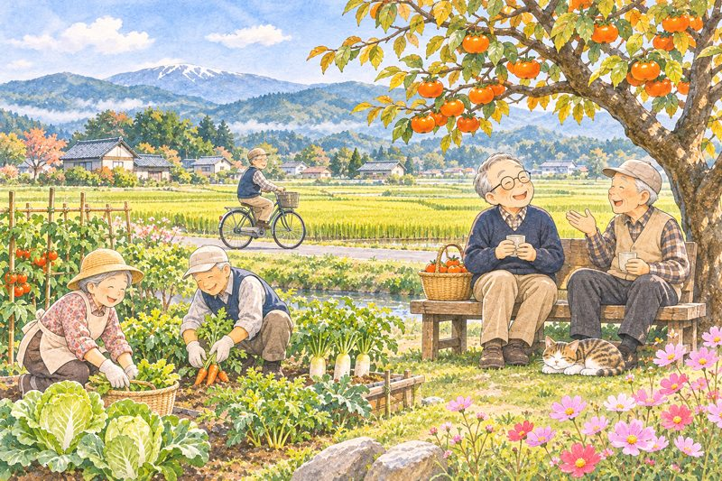
43.391 người ở Ohsaki, 40–79 tuổi
Các nhà khoa học Đại học Tohoku hỏi mỗi người: "Ông bà có ikigai không?", rồi theo dõi khoảng 7 năm.
Đã tính cả tuổi, bệnh, hút thuốc, vận động, nhóm trả lời "không có" vẫn tử vong nhiều gấp khoảng 1,5 lần nhóm trả lời "có". Nghiên cứu này cho thấy hai điều đi cùng nhau, chưa chứng minh cái này sinh ra cái kia.
Nguồn: Sone T. và cộng sự, tạp chí Psychosomatic Medicine (Mỹ), 2008.

Ikigai là việc vừa thích vừa ra tiền?
Không. Sơ đồ bốn vòng tròn "đam mê, sứ mệnh, nghề, tiền" hay thấy trên mạng do một người Anh vẽ năm 2014.
Với người Nhật, ikigai có khi chỉ là chăm chậu lan, dạy cháu một món ăn, đón cháu đi học. Bố mẹ đã nghỉ hưu không cần tìm "sự nghiệp" mới.
Bố mẹ buồn kéo dài, mất ngủ, chẳng thiết làm gì: đưa đi khám, đừng chỉ khuyên "tìm thú vui".
Hỏi bố mẹ một câu tối nay
Thử 7 ngày
Có việc để mong thì bấm đóng dấuMỗi sáng, một việc nhỏ
để mong chờ.
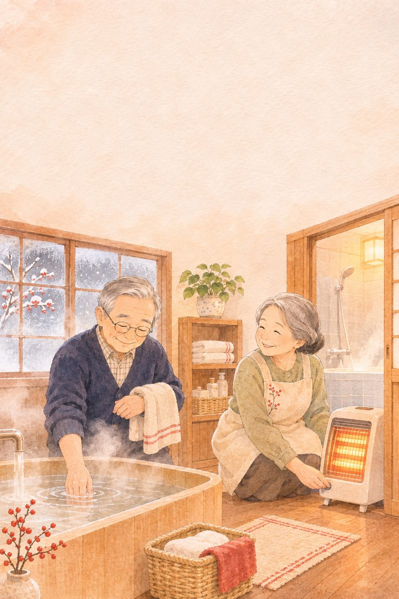
Tắm ấm 40°C,
ngủ sâu tới sáng
nyūyoku · ofuro
Người Nhật tắm buổi tối không chỉ để sạch người, mà để làm ấm mạch máu và chuẩn bị cho một giấc ngủ sâu.
Mười phút ấm áp trước giờ đi ngủ
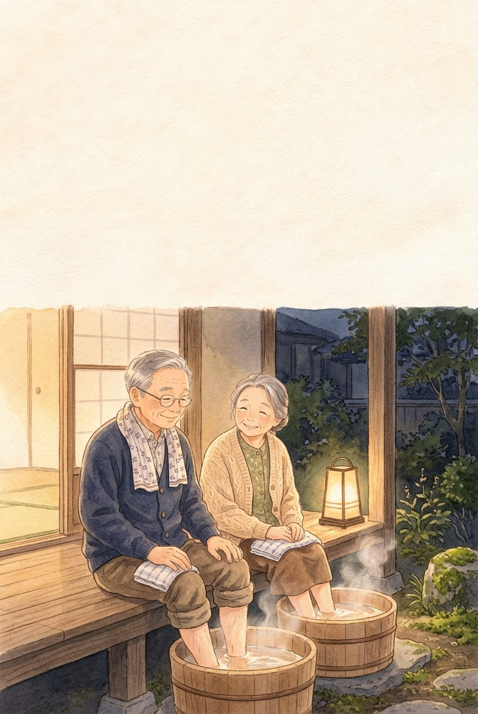
Ở Nhật, hầu như nhà nào cũng giữ thói quen tắm ấm hoặc ngâm chân nước ấm trước giờ đi ngủ khoảng 90 phút.
Các bác sĩ suối khoáng Nhật Bản gọi mốc 40°C trong 10 phút (hoặc ngâm chân nước ấm muối gừng 15 phút ở những nhà không có bồn tắm) là "nhiệt độ dưỡng sinh": vừa đủ làm ấm bàn tay, bàn chân mà không gây mệt tim.
Chuyện vui: ông Sato ham nước thật nóng
 Trời lạnh phải tắm thật nóng mới đã!
Khoan! Nước trên 42°C dễ vọt huyết áp lắm!
40°C ấm vừa, thêm chậu ngâm chân êm ru!
Chân ấm, lưng nhẹ, đặt lưng là ngủ ngay!
Trời lạnh phải tắm thật nóng mới đã!
Khoan! Nước trên 42°C dễ vọt huyết áp lắm!
40°C ấm vừa, thêm chậu ngâm chân êm ru!
Chân ấm, lưng nhẹ, đặt lưng là ngủ ngay!
Vì sao ấm bàn chân thì đầu dễ ngủ?

Khi ngâm nước ấm 40°C, hệ thần kinh thư giãn được bật lên, các mạch máu nhỏ ở bàn tay và bàn chân giãn mở.
Sau khi bước ra khoảng 60–90 phút, nhiệt lượng tỏa nhẹ qua lòng bàn chân giúp thân nhiệt bên trong hạ xuống chừng 0,5°C — đó chính là tín hiệu tự nhiên báo cho não bộ vào giấc ngủ sâu.
Ngược lại, nếu để bàn chân lạnh cóng khi lên giường, mạch máu co lại khiến đầu óc cứ trằn trọc mãi.
Theo dõi 3 vạn người suốt 19 năm
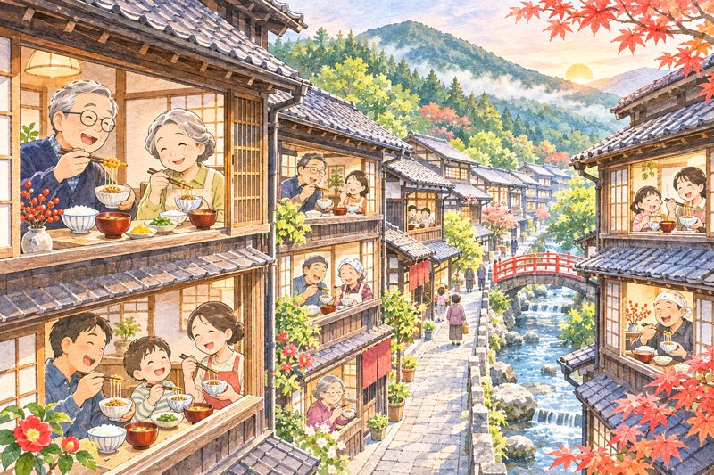
30.076 người Nhật, tuổi 40–59
Nhóm nghiên cứu của Đại học Osaka theo dõi thói quen tắm ấm của hơn 30 nghìn người trong suốt 19 năm.
Những người tắm ấm đều đặn mỗi tuần có nguy cơ mắc bệnh tim mạch thấp hơn 28% và nguy cơ đột quỵ thấp hơn 26% so với nhóm ít tắm ấm.
Nguồn: Ukawa S. và cộng sự, tạp chí Heart (Anh), 2020.
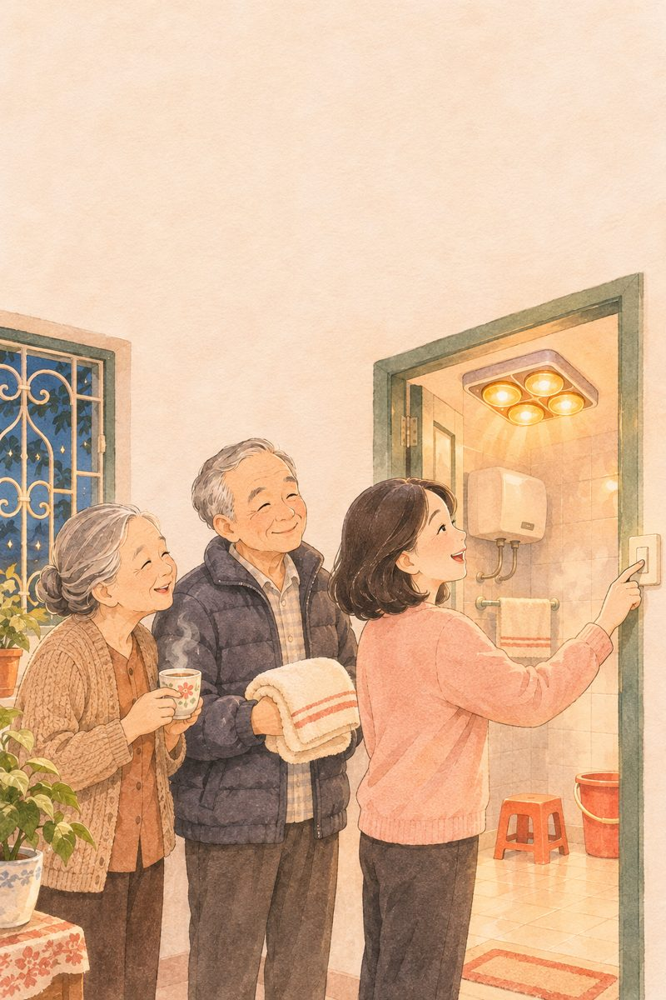
Tắm càng muộn, nước càng nóng càng tốt?
Không. Tắm đêm sau 21h hoặc dùng nước quá nóng trên 42°C trong phòng tắm lạnh dễ gây "sốc nhiệt" làm huyết áp vọt cao.
Ở Việt Nam, cách an toàn và dễ làm nhất cho bố mẹ là tắm ấm sớm trước 19h30, còn trước khi ngủ 60 phút thì ngâm chân nước ấm 40°C với vài lát gừng trong 15 phút.
Người có bệnh suy giãn tĩnh mạch nặng hoặc vết thương hở ở bàn chân: hỏi bác sĩ trước khi ngâm nước ấm.
Tối nay ngâm ấm đôi bàn chân
Thử 7 ngày
Tối nào giữ ấm chân đúng cách thì bấm đóng dấu
Dạo dưới tán cây,
ấm tách trà chiều
shinrin-yoku & ryokucha
Người Nhật chữa mỏi mệt đầu óc bằng hai thứ rất gần: bóng cây xanh ngoài ngõ và tách trà xanh ấm trong nhà.
“Tắm rừng” không phải là bơi trong suối
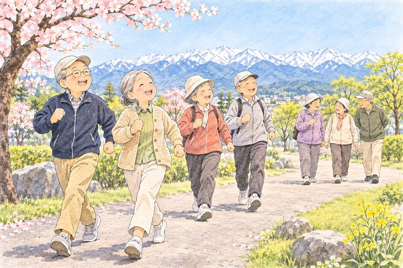
Năm 1982, Cơ quan Lâm nghiệp Nhật Bản đặt ra từ Shinrin-yoku (森林浴 — Tắm rừng): đi bộ chậm rãi dưới tán cây, nghe tiếng lá xào xạc, hít sâu mùi tinh dầu cây cỏ tự nhiên.
Sau buổi đi dạo, người Nhật trở về hiên nhà, pha một ấm trà xanh Ryokucha ở nhiệt độ ấm 75–80°C để vị ngọt dịu L-theanine và chất chống oxy hóa Catechin thấm nhẹ vào cơ thể.
Chuyện vui: ông Sato đi công viên vẫn nhìn điện thoại
 Ra công viên mà ông cứ dán mắt vào điện thoại!
Cất máy đi ông, nhìn tán cây xanh và hít sâu nào!
Chiều về làm tách trà ấm trước 3 giờ chiều nhé!
Đầu óc nhẹ bẫng, tối ngủ ngon chẳng lo trằn trọc!
Ra công viên mà ông cứ dán mắt vào điện thoại!
Cất máy đi ông, nhìn tán cây xanh và hít sâu nào!
Chiều về làm tách trà ấm trước 3 giờ chiều nhé!
Đầu óc nhẹ bẫng, tối ngủ ngon chẳng lo trằn trọc!
Cây xanh và lá trà giúp gì cho tuổi 50+?

Cây xanh tiết ra các hợp chất thơm tự nhiên gọi là Phytoncide. Khi hít thở dưới bóng cây 20 phút, hormone căng thẳng Cortisol giảm xuống và tế bào miễn dịch tự nhiên (NK) hoạt động mạnh mẽ hơn.
Trong khi đó, lá trà xanh chứa Catechin (EGCG) giúp bảo vệ thành mạch máu khỏi quá trình oxy hóa, còn L-theanine giúp đầu óc thư thái, minh mẫn.
Tế bào miễn dịch khỏe lên và mạch máu bền hơn
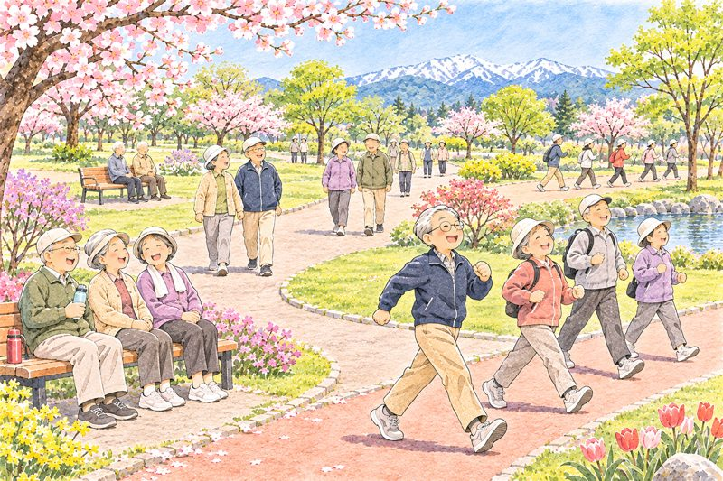
40.530 người ở Ohsaki, theo dõi 11 năm
Nghiên cứu của Đại học Tohoku cho thấy những người uống trà xanh ấm đều đặn mỗi ngày giảm 26% nguy cơ tử vong do bệnh tim mạch so với người hiếm khi uống.
Cùng lúc đó, các thí nghiệm của GS. Qing Li (Đại học Y Nippon) chứng minh đi dạo trong công viên nhiều cây xanh giúp tăng hoạt tính tế bào miễn dịch NK lên khoảng 50%.
Nguồn: Kuriyama S. và cộng sự, JAMA (Mỹ), 2006; Li Q., Environmental Health and Preventive Medicine (Nhật), 2010.

Pha trà thật đặc, uống cả buổi tối cho khỏe?
Không nên. Trà quá đặc lúc bụng đói dễ làm cồn ruột và cản trở hấp thu sắt; uống trà sau 15–16h chiều lại dễ làm người lớn tuổi khó ngủ.
Cách uống chuẩn Nhật là pha trà vừa phải với nước ấm 75–80°C, thưởng thức sau bữa sáng hoặc đầu giờ chiều (trước 15h), và tuyệt đối không lấy nước trà để uống thuốc.
Người bị viêm loét dạ dày đang đau cấp hoặc thiếu máu thiếu sắt nên hạn chế trà đặc.
20 phút cây xanh & tách trà trước 15h
Thử 7 ngày
Hôm nào dạo cây xanh & uống trà đúng giờ thì đóng dấu
Có hội bạn già,
trăm tuổi chẳng cô đơn
moai · okinawa
Ở đảo trường thọ Okinawa, ai cũng có một nhóm bạn 4–5 người hẹn gặp nhau mỗi tuần suốt cả cuộc đời — gọi là Moai.
Những nhóm bạn đi cùng nhau 70 năm
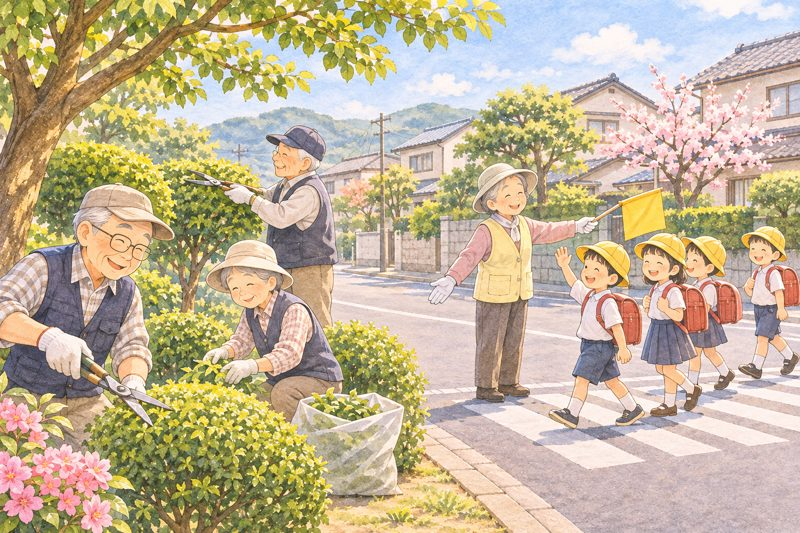
Moai (模合) vốn là truyền thống tương trợ lâu đời của người dân đảo Okinawa. Một nhóm 4 đến 6 người bạn hàng xóm hoặc đồng niên lập hội, hẹn nhau uống trà, đi bộ, ca hát hoặc thăm nhau đều đặn mỗi tuần.
Ai có chuyện vui cả nhóm cùng mừng; ai ốm mệt hay buồn phiền có bạn đến tận nhà hỏi han. Nhờ vậy, các cụ già trên 90 tuổi ở Okinawa hầu như không ai rơi vào cảnh cô độc.
Chuyện vui: hội cờ tướng và trà chiều của ông bà Sato
 Ngồi xem tivi một mình cả chiều buồn ngủ quá…
Sang hiên nhà bác Tanaka họp hội Moai đi ông!
Nước cờ này cao đấy! Cười đau cả bụng!
Nói chuyện một buổi mà đầu óc tỉnh táo hẳn ra!
Ngồi xem tivi một mình cả chiều buồn ngủ quá…
Sang hiên nhà bác Tanaka họp hội Moai đi ông!
Nước cờ này cao đấy! Cười đau cả bụng!
Nói chuyện một buổi mà đầu óc tỉnh táo hẳn ra!
Vì sao trò chuyện lại là “bài tập tạ” cho não bộ?

Khi ngồi xem tivi một mình, não bộ ở trạng thái thụ động. Nhưng khi trò chuyện cùng bạn bè, não phải vừa lắng nghe, vừa nhớ lại kỷ niệm, vừa chọn từ ngữ và biểu cảm gương mặt.
Quá trình ấy làm tăng lưu lượng máu lên vùng vỏ não trước trán và hồi hải mã, đồng thời tiết ra Oxytocin và Endorphin giúp hạ huyết áp và bảo vệ trí nhớ.
Gắn kết bạn bè giảm gần một nửa nguy cơ lú lẫn

13.984 người cao tuổi Nhật Bản (nghiên cứu JAGES)
Dự án Nghiên cứu Đánh giá Lão khoa Nhật Bản (JAGES) theo dõi gần 14 nghìn người lớn tuổi trong gần 10 năm.
Những ông bà duy trì gặp gỡ bạn bè, tham gia nhóm sinh hoạt xóm giềng đều đặn có nguy cơ khởi phát sa sút trí tuệ thấp hơn tới 30–46% so với những người sống khép kín, ít giao tiếp.
Nguồn: Saito M., Hikichi H. và cộng sự, dự án JAGES Nhật Bản, tạp chí Social Science & Medicine / American Journal of Epidemiology, 2017–2019.
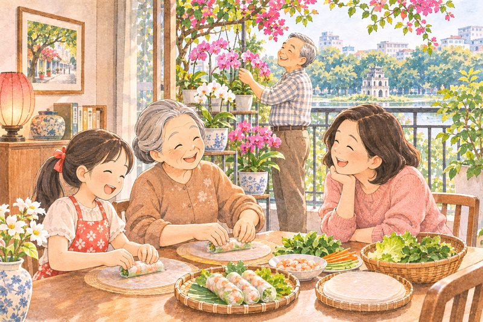
Tuổi già chỉ cần ở yên trong nhà với con cháu là đủ?
Con cháu rất quý, nhưng ban ngày con cái đi làm, cháu đi học — bố mẹ rất cần những người bạn đồng lứa để tâm sự chuyện xưa nay.
Một "hội Moai kiểu Việt" rất giản dị: 3–5 ông bà cùng ngõ hẹn nhau đi bộ buổi sáng, đánh cờ, tập dưỡng sinh hoặc uống trà chiều Thứ Bảy.
Nếu bố mẹ bỗng nhiên ngại gặp bạn bè, hay quên đường hoặc lặp lại một câu hỏi nhiều lần: hãy đưa bố mẹ đi khám chuyên khoa thần kinh – lão khoa sớm.
Mỗi ngày một cuộc trò chuyện ấm áp
Thử 7 ngày
Hôm nào có cuộc trò chuyện vui vẻ thì bấm đóng dấu
Đo vòng eo,
khám định kỳ
tokutei kenshin · ningen dock
Người Nhật không đợi đau mới tới bệnh viện — mỗi năm họ dành một ngày đưa cơ thể vào “âu tàu” kiểm tra tổng quát.
Từ thước dây đo bụng đến ngày “Ningen Dock”

Ở Nhật có hai truyền thống tầm soát nổi tiếng: một là Ningen Dock (人間ドック — Âu tàu con người) ra đời từ năm 1954, nơi người lớn tuổi kiểm tra tổng quát tim, mạch, máu, dạ dày mỗi năm một lần.
Hai là chương trình Tokutei Kenshin (特定健診) từ năm 2008: mọi người dân tuổi 40–74 đều được đo vòng eo ngang rốn và xét nghiệm mỡ máu, đường máu, huyết áp hằng năm để phát hiện sớm mỡ nội tạng.
Chuyện vui: ông Sato sợ đi khám vì… sợ ra bệnh
 Tôi vẫn khỏe re, khám xét làm gì cho tốn công!
Ông xem vòng bụng năm nay nhỉnh hơn rồi này!
Đi khám sớm mới biết mỡ máu hơi cao để chỉnh bữa ăn!
Biết sớm sửa sớm, lòng nhẹ nhõm cả năm!
Tôi vẫn khỏe re, khám xét làm gì cho tốn công!
Ông xem vòng bụng năm nay nhỉnh hơn rồi này!
Đi khám sớm mới biết mỡ máu hơi cao để chỉnh bữa ăn!
Biết sớm sửa sớm, lòng nhẹ nhõm cả năm!
Vì sao vòng eo lại báo trước bệnh mạch máu?

Nhiều người tay chân không béo nhưng vùng bụng lại tích mỡ nội tạng bao quanh gan và ruột. Lớp mỡ này âm thầm tiết ra các chất gây viêm làm tăng huyết áp, kháng insulin (tiền tiểu đường) và rối loạn mỡ máu.
Điểm nguy hiểm nhất là cả ba chứng cao huyết áp, mỡ máu cao, đường huyết cao ở giai đoạn đầu đều không hề gây đau nhức — chỉ có thước dây đo vòng eo và xét nghiệm máu định kỳ mới nhận ra kịp thời.
Vòng eo giảm 3 cm, huyết áp và đường máu cùng hạ
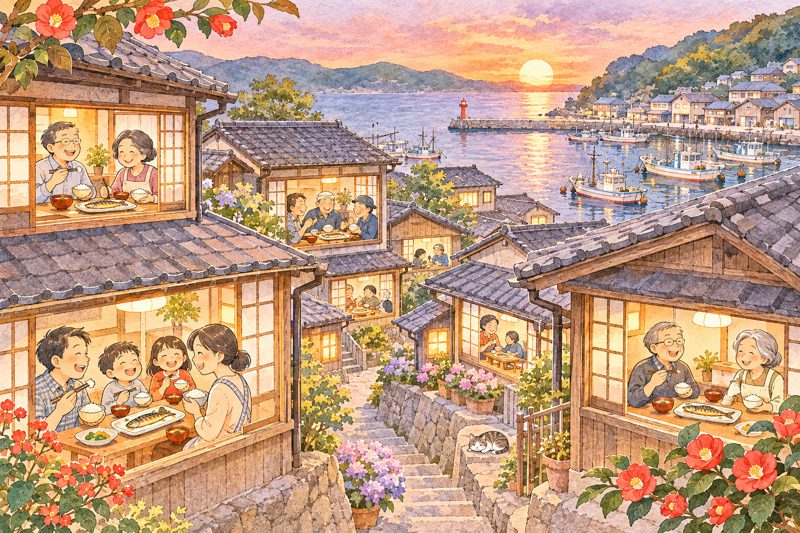
>28 triệu người Nhật khám tầm soát mỗi năm
Theo dữ liệu của Bộ Y tế, Lao động và Phúc lợi Nhật Bản (MHLW) cùng nghiên cứu của Tsushita K. và cộng sự, những người được phát hiện sớm hội chứng chuyển hóa qua khám định kỳ và điều chỉnh ăn nhạt – đi bộ giảm trung bình 2–3 cm vòng eo chỉ sau 6 tháng.
Chỉ cần giảm chừng ấy mỡ bụng, huyết áp tâm thu, Triglyceride và chỉ số đường huyết HbA1c đều cải thiện rõ rệt mà nhiều người chưa cần dùng tới thuốc.
Nguồn: Tsushita K. và cộng sự, Journal of Atherosclerosis and Thrombosis (Nhật Bản), 2018.

“Không đau nhức gì nghĩa là trong người hoàn toàn khỏe”?
Chưa chắc. Tim mạch, thận, gan và xương khớp thường chịu đựng âm thầm suốt nhiều năm trước khi phát thành triệu chứng.
Ở Việt Nam, cách báo hiếu thiết thực nhất mỗi dịp đầu xuân hoặc sinh nhật bố mẹ là đặt lịch khám sức khỏe tổng quát định kỳ 6–12 tháng/lần và giữ một cuốn sổ ghi lại 5 chỉ số: Vòng eo – Huyết áp – Đường máu – Mỡ máu – Mật độ xương.
Khi đi khám định kỳ, nhớ nhắc bố mẹ nhịn ăn sáng (chỉ uống nước lọc) để xét nghiệm máu chính xác và mang theo toàn bộ đơn thuốc đang dùng.
Đo vòng eo sáng mai & lập sổ sức khỏe
Thử 7 ngày
Theo dõi cân nặng, huyết áp hoặc đi bộ gọn bụng thì đóng dấuNgười Nhật còn dùng thêm
Thói quen là phần chính, mấy món này để bổ sung.
Natto Ichou – Genki Fami
Nattokinase 3.000 FU hỗ trợ giảm hình thành cục máu đông, thêm dầu cá Omega-3 và bạch quả. Mỗi ngày 2–3 viên.

Fucoidan Genki Fami
Chiết xuất từ tảo mozuku Okinawa, hỗ trợ nâng cao sức đề kháng, hạn chế quá trình oxy hóa. Mỗi ngày 5 viên.

Genki Fami Omega-3 & Astaxanthin
Dầu gan cá mập biển sâu bổ sung DHA, EPA, thêm Astaxanthin hỗ trợ chống oxy hóa. Mỗi ngày 3 viên.

Sữa người lớn Beanstalk Onaka ni Yasashii
Lactose giảm khoảng 90%, dịu với bụng. Mỗi ly có canxi 150 mg, vitamin D và 5 g đạm.
Sản phẩm chứa thành phần sữa và đậu nành. Người dị ứng đạm sữa bò hoặc đậu nành không dùng.
Natto Ichou, Fucoidan và Omega-3 Genki Fami là thực phẩm bảo vệ sức khỏe. Thực phẩm này không phải là thuốc và không có tác dụng thay thế thuốc chữa bệnh.
Nguồn tham khảo
- Bộ Y tế, Lao động và Phúc lợi Nhật Bản: Tiêu chuẩn dinh dưỡng của người Nhật, bản 2025 (mức muối khuyên dùng).
- Chính phủ Nhật Bản, tạp chí Highlighting Japan, 12/2015: bài về tuổi thọ và phong trào bớt muối ở Nagano.
- Web Japan, Nipponia số 29: vùng Saku, tỉnh Nagano.
- Tổ chức Y tế Thế giới (WHO): khuyến nghị dưới 5 g muối mỗi ngày.
- Bộ Y tế Việt Nam, điều tra toàn quốc 2015: người trưởng thành ăn trung bình 9,4 g muối mỗi ngày.
- Maruyama K. và cộng sự, BMJ, 2008: ăn nhanh, ăn đến căng bụng và thừa cân ở người Nhật.
- Kokkinos A. và cộng sự, Journal of Clinical Endocrinology & Metabolism, 2010: ăn chậm và cảm giác no.
- Kurotani K. và cộng sự, BMJ, 2016: ăn theo hướng dẫn con quay của Nhật và tuổi thọ.
- Sacks F.M. và cộng sự, New England Journal of Medicine, 2001: bớt muối và huyết áp.
- Murai U. và cộng sự, American Journal of Clinical Nutrition, 2019: ăn rong biển và bệnh tim ở người Nhật.
- Iso H. và cộng sự, Circulation, 2006: ăn cá và bệnh mạch vành ở người Nhật (nghiên cứu JPHC).
- Nagata C. và cộng sự, American Journal of Clinical Nutrition, 2017: ăn natto và tử vong do bệnh tim mạch ở Takayama.
- Cơ quan Dược phẩm và Thiết bị Y tế Nhật Bản (PMDA): hỏi đáp về thuốc warfarin và natto.
- Nemoto K. và cộng sự, Mayo Clinic Proceedings, 2007: đi bộ nhanh, chậm xen kẽ ở người trung niên và cao tuổi.
- Sone T. và cộng sự, Psychosomatic Medicine, 2008: ikigai và tử vong ở người Nhật (nghiên cứu Ohsaki).
- Hiệp hội Trung tâm nhân lực bạc toàn quốc Nhật Bản (qua báo Yomiuri, 10/2021): khoảng 698 nghìn hội viên cuối năm tài chính 2020.
- Ukawa S. và cộng sự, Heart, 2020: thói quen tắm ấm (Ofuro) và nguy cơ bệnh tim mạch, đột quỵ ở 30.076 người Nhật.
- Kuriyama S. và cộng sự, JAMA, 2006; Li Q., Environmental Health and Preventive Medicine, 2010: uống trà xanh và tắm rừng (Shinrin-yoku) ở Nhật Bản.
- Saito M., Hikichi H. và cộng sự, dự án JAGES Nhật Bản, 2017–2019: gắn kết xã hội (Moai) và phòng ngừa sa sút trí tuệ ở người cao tuổi.
- Tsushita K. và cộng sự, Journal of Atherosclerosis and Thrombosis, 2018: chương trình đo vòng eo và khám tầm soát định kỳ Tokutei Kenshin / Ningen Dock tại Nhật Bản.
Cẩm nang chia sẻ kiến thức sống khỏe, không thay cho lời khuyên của bác sĩ. Khi thấy dấu hiệu bất thường, hãy đi khám; cấp cứu gọi 115. Biên soạn: HSC.